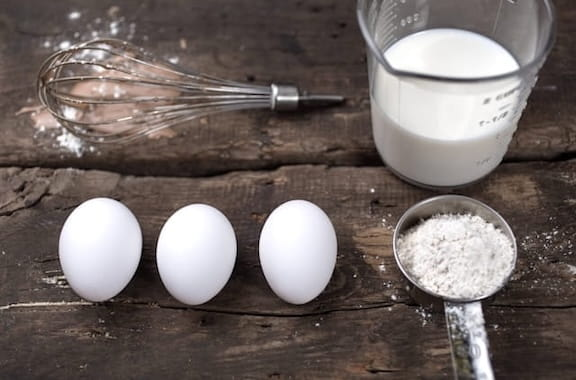

Galletas con chispas de chocolate
¡Te damos la bienvenida a la guía definitiva para preparar mini galletas con chispas de chocolate! Estos bocaditos
son perfectos para satisfacer tus ganas de algo dulce sin excederte. Sigue esta sencilla receta para crear unas
deliciosas mini galletas con chispas de chocolate: crujientes por fuera y tiernas por dentro. ¡A todo el mundo
le encantarán!

Ingredientes
- 1 taza de harina de trigo (todo uso)
- 1/2 cucharadita de bicarbonato de sodio
- 1/4 de taza de mantequilla sin sal, ablandada
- 1/4 de taza de azúcar granulada
- 1/2 cucharadita de extracto de vainilla
- 1/2 taza de mini chispas de chocolate
Instrucciones
- Precalienta el horno a 350 °F (175 °C) y cubre una bandeja para hornear
con papel de horno (papel vegetal).
- En un recipiente, mezcla la harina y el bicarbonato de sodio.
- En otro recipiente, bate la mantequilla, el azúcar y el extracto de
vainilla hasta obtener una mezcla cremosa.
- Incorpora gradualmente los ingredientes secos a la mezcla húmeda y, luego,
añade las mini chispas de chocolate.
- Coloca pequeñas porciones de masa (usando una cuchara) sobre
la bandeja para hornear.
- Hornea durante 8-10 minutos y deja enfriar antes de disfrutar. ¡Que aproveche!